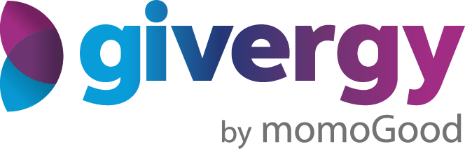

CommunityTwo takes on the public Givergy Community hub. Both share the same content, branding, login modal and article reader — they differ on overall layout, navigation pattern, and how logged-in member features surface.
A welcoming marketing-style page you scroll top to bottom. Sticky pill navigation and a warm hero with a dedicated search. Guides & Advice have “See All” pages; logged-in members get their Account Tools and a personalised “For You” band surfaced at the top.
Open Option AAn app-like resource centre with a persistent left sidebar and view switching — closer to the CMS itself. Logged-in members gain a dedicated “Your Account” sidebar group and a personalised For You view.
Open Option B